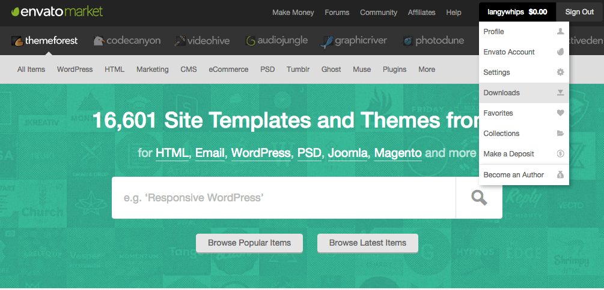
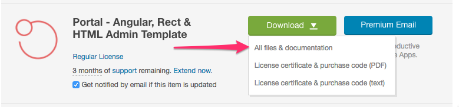

Downloading
Now you have all the prerequisites installed on your system the next step is to grab the latest copy of Cryptum from ThemeForest.
First of all you will need to log in to your ThemeForest account
Click your account menu
- Click the Downloads link in the dropdown menu

- Locate the Cryptum template on your downloads page
- Click the download button and then select All files & documentation

Unzipping the download
You should now have a file that looks something like this.
themeforest-11711437-cryptum-material-design-admin-template.zip
In order to get at the goodness inside you will need to unzip this file.
Zip Contents
Once you have unzipped the Cryptum zip file you will find the following folders have been created.
| Folder / File | Contents |
|---|---|
| cryptum-html.zip | Zip file containing the built HTML/JS/CSS demo |
| cryptum-source.zip | Zip file containing the source code and gulp builder |
| docs/ | Contains this documentation |
| documentation.pdf | Contains the PDF version of this documentation |
| sketch | Contains the sketch design files |
If you want to use our gulp build system for your project which provides support for SASS, partials and a build system then use the cryptum-source.zip file.
Or if you prefer to just work with plain HTML / JS / CSS then use the cryptum-html.zip